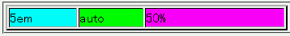

固定レイアウトテーブル（table-layout:fixed;）内で列幅を指定するとき、指定値に具体的な値・%単位の値・auto値を混在させると、%単位の値の算出値が本来算出されるべき値より小さくなることがある。
<table border="2" style="width:50%; table-layout:fixed"> <tr> <td style="background:aqua; width:5em;">5em</td> <td style="background:lime; width:auto;">auto</td> <td style="background:fuchsia; width:50%;">50%</td> </tr> </table>
| 5em | auto | 50% |
左から3列目にあるセルの幅がテーブルの幅の半分になるはずです。
N7.1での表示（標準モード）
自動レイアウトテーブル（table-layout:auto;）でこの不具合は発生しないそうです。また、固定レイアウトテーブルでも列幅の指定に単位が混在しなければ（%単位の値だけを使用する場合や、具体的な値とauto値だけを使用する場合など）不具合が発生しないそうです。
Safari1.0でこの不具合が発生するそうです。